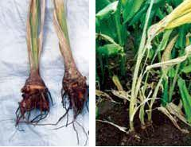

Disease symptoms

The collar region of the affected pseudostem becomes water soaked and the rotting spreads to the rhizome resulting in soft rot.
Foliar symptoms appear as light yellowing of the tips of lower leaves which gradually spreads to the leaf blades.
Survival and spread
The disease is soil-borne. The fungus multiplies with buildup of soil moisture with the onset of south west monsoon.
The fungus can survive in two ways: (a) in diseased rhizomes kept for sowing and (b) through resting structures like chlamydospores and oospores that reach the soil from infected rhizomes.
Favourable conditionsbr
Younger sprouts are the most susceptible to the pathogen. Nematode infestation aggravates rhizome rot disease.
Temperature above 30° C and high soil moisture are the important predisposing factors favouring the disease.
Water logging in the field due to poor drainage increases the intensity of the disease.